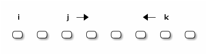

Leetcode Summary
Problems
Some assumptions and notations
- Space and time complexity does not include input and output.
- \(n\) denotes the input length unless noted otherwise.
- In case of graph, \(E\) denotes the number of edges, \(V\) number of vertices/nodes.
014 Longest Common Prefix adhoc
\(k\) is the length of longest common prefix.
- Time \(O(nk)\)
- Space \(O(1)\)
015 3Sum adhoc
- Time \(O(n^2)\)
- Space \(O(1)\)
Sort the array first, then use two loops:
- outer one
iranges[0, n-3) - inner one
jstarts fromi,kstarts from the end,- if sum is greater than expected, move
kleft, - if sum is less than expected, move
jright, - otherwise move
jright andkleft - until they meet
- if sum is greater than expected, move

035 Search Insert Position binarysearch
- Time \(O(\log n)\)
- Space \(O(1)\)
See the C++ std implementation of upper_bound or lower_bound.
113 Path Sum II bfs dfs
- Time \(O(E+V)\)
- Space \(O(V)\)
BFS is more space expansive up to a constant factor.
116 Populating Next Right Pointers in Each Node bfs
- Time \(O(E+V)\)
- Space \(O(1)\)
Two loops:
iiterates "row"jiterates each level and connects each node's children.
117 Populating Next Right Pointers in Each Node II bfs
- Time \(O(E+V)\)
- Space \(O(1)\)
Similar to 116 Populating Next Right Pointers in Each Node, we need to keep track of each level's starting node.
199 Convert Sorted List to Binary Search Tree bfs dfs
- Time \(O(E+V)\)
- Space \(O(V)\)
Search the tree following BFS or DFS.
- BFS, record the last element at every level.
- DFS, right-to-left in-order traverse, record the element when level increases.
309 Best Time to Buy and Sell Stock with Cooldown dp
- Time \(O(n^2)\)
- Space \(O(n)\)
Adpated from @GWTW solution. For day k, there are four states.
- Have stock, do nothing
- Have stock, sell the stock
- Have no stock, do nothing
- Have no stock, buy the stock
Let a[k], b[k], c[k], d[k] denote the maximum profit on day k ending in each of the four states respectively, P[k] the stock price on day k. The final solution is max(b[n], c[n]).
State transition:
a[k + 1] = max(a[k], d[k])b[k + 1] = max(a[k], d[k]) + P[k + 1] - P[k]c[k + 1] = max(b[k], c[k])d[k + 1] = max(c - P[k + 1])
Iterate from day 0 and initial values are all zeros.